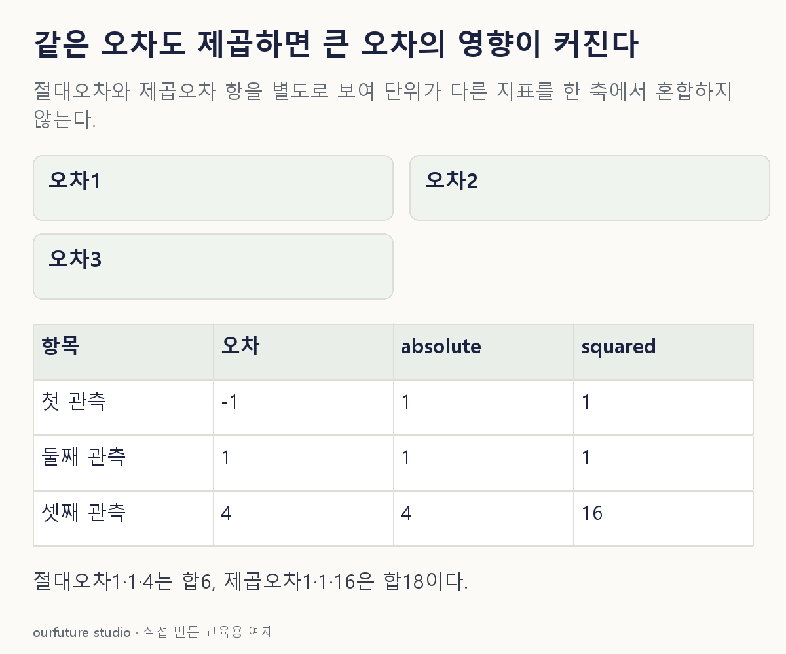

조건을 바꾸며 확인하기
가중치 없는 단일 출력·같은 세 관측의 자체 오차다. 손실 선택의 보편적 우월성을 판정하지 않는다.
설명 그림과 비교하기
아래 그림과 표는 고정된 설명 예제입니다. 기본·변형 중 어떤 조건인지 캡션을 읽고, 바꾼 입력의 결과는 계산 칸에서 확인하세요.

같은 문제를 직접 골라 보기
평가 3건의 오차 e=y−ŷ는 −1·1·4이며 모든 관측의 가중치는 같다.
조건을 더 바꾸면?
마지막 오차 4만 8로 커지고 나머지−1·1은 유지된다. 새 MAE와 MSE를 계산하라.
변형 풀이 확인
MAE=10/3≈3.333, MSE=66/3=22다.
큰 오차 항은 절댓값 4→8로 2배가 되지만 제곱오차 16→64로 4배가 된다. 큰 오차가 지표에 미치는 차이를 항별로 확인한다.
제곱을 먼저 했는지, 평균을 먼저 했는지.